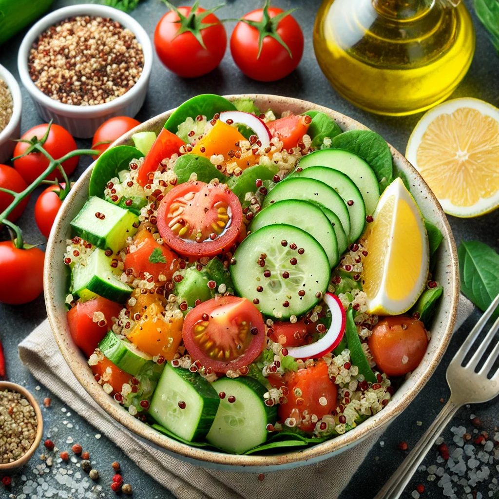

Descubre recetas fáciles y saludables que puedes preparar con ingredientes frescos.
Ensalada de Quinoa y Vegetales

Una ensalada fresca y rica en proteínas, perfecta para acompañar tus comidas o como plato principal.
Ingredientes:
- 1 taza de quinoa cocida
- 1 pepino picado
- 1 pimiento rojo picado
- Tomates cherry partidos a la mitad
- Aceite de oliva extra virgen
- Zumo de limón
- Sal y pimienta al gusto
Instrucciones:
- Cocina la quinoa según las instrucciones del paquete.
- En un bol grande, mezcla la quinoa con los vegetales picados.
- Añade el aceite de oliva, el zumo de limón, sal y pimienta al gusto.
- Mezcla bien y sirve fresca.
Tiempo de preparación: 20 minutos